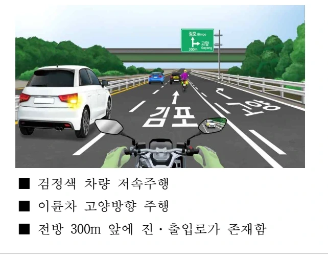

859. Дараахын аль нь хамгийн аюулгүй жолоодох арга 2 вэ?

- ①Хар өнгийн тээврийн хэрэгслийн баруун талаар гүйцэж түрүүлнэ.
- ②Хар өнгийн тээврийн хэрэгсэлтэй нэг эгнээнд зэрэгцэн явна.
- ③Гоян чиглэл рүү гарахын тулд нэн даруй 3-р эгнээ рүү эгнээ солино.
- ④Цагаан өнгийн тээврийн хэрэгсэл эгнээ сольж болзошгүй тул хурд сааруулж аюулгүйн зай барина.
- ⑤Эгнээ солих боломжтой цагаан тасархай шугамтай хэсэг хүртэл явж байгаад 3-р эгнээ рүү орно.
Хариулт харах
Зөв хариулт
④ Цагаан өнгийн тээврийн хэрэгсэл эгнээ сольж болзошгүй тул хурд сааруулж аюулгүйн зай барина.
⑤ Эгнээ солих боломжтой цагаан тасархай шугамтай хэсэг хүртэл явж байгаад 3-р эгнээ рүү орно.
Үндэслэл
③ Цагаан үргэлжилсэн ба тасархай шугам зэрэгцсэн тэмдэглэгээг зам салж, нийлэх хэсгийн шаардлагатай газарт тавина. Тасархай талын эгнээнээс сольж болно; үргэлжилсэн талын эгнээнээс солихыг хязгаарлана.
Үндэслэлийн текст нь машин орчуулга.